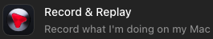

Desktop Plugins
The web and desktop apps share the same public plugin directory, so most plugins you've used before should be accessible in the desktop app too.
The desktop app also adds a few exclusive tools that work directly with your computer, some of which are listed below.
These plugins can be installed from the Plugins catalog accessed from the sidebar.
Because these plugins interact with your computer, they are all exclusive to Work or Codex.
These desktop tools are still emerging. They can be useful, but they may work much more slowly than a person or get stuck on simple interface changes. They are more of a novelty at the moment, but you may find some use for them.
Computer Use
Lets ChatGPT see and operate apps on your computer. It can click buttons, type, navigate menus, and move between apps much as you would.
It's most useful for apps that provide no specialized way for ChatGPT to interact — the only way in is the same screen, buttons, and menus a person uses.
If a tool already has a plugin, that route is usually faster and more reliable; Computer Use is for everything that doesn't.
Try it yourself
Tag the plugin with @ and give it a simple task:
“@Computer open the Calculator app and type 123.”
Expected outcome: it opens Calculator and clicks in the digits.
Chrome
Lets ChatGPT work in your Google Chrome browser. The Chrome plugin lets ChatGPT operate Chrome for you, navigating websites, filling things in, and clicking through websites.
Using it also requires installing the ChatGPT Chrome extension in Chrome itself.
The plugin is built specifically for Chrome, so it's usually the better choice over Computer Use for browser work.
Browser
Opens a separate web browser inside the ChatGPT desktop app that ChatGPT can work in. This browser has its own history and sign-ins, separate from your regular browser.
If you plan on using the Chrome plugin, this feature is mostly redundant, unless you want an isolated browser.
This tool is part of ChatGPT by default, no install required.
Record & Replay (Mac only)

When you activate Record & Replay, ChatGPT will record your screen as you do a task. Once you finish the recording, ChatGPT will try to turn the process into a reusable skill.
Show ChatGPT how you perform a repeatable task, such as downloading a monthly report or filing an expense. After that, just use the skill, and ChatGPT will repeat the steps. You essentially create smarter macros.
Computer Use must be enabled to use this feature.